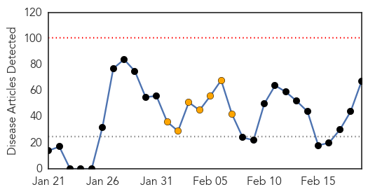
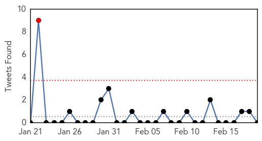
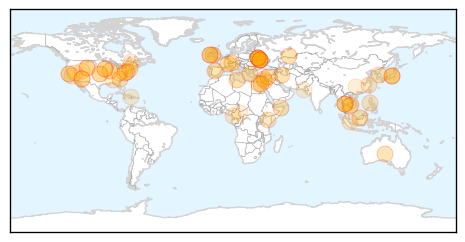
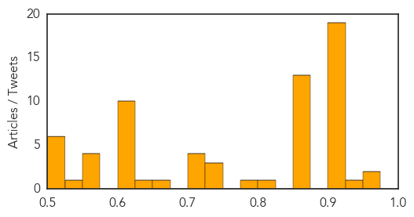

Ebola
30-Day Web Trend
0 alerts, 0 warnings

30-Day Twitter Trend
0 alerts, 0 warnings

Article Locations

Article Confidences

Top Articles:
-
No articles found for Feb 19, 2014
Top Tweets:
-
No tweets found for Feb 19, 2014
Unknown
30-Day Web Trend
0 alerts, 7 warnings

30-Day Twitter Trend
1 alerts, 0 warnings

Article Locations
Article Confidences
Top Articles:
- 0.973
- Flu outbreak leads to visiting restrictions at CUH
- 0.953
- N.D. orders health certificate statement on imported swine
- 0.943
- UN agriculture agency rules out human-to-animal transmission of bird flu
- 0.917
- Chicago Tribune
- 0.917
- Chicago Tribune
- 0.917
- Chicago Tribune
- 0.917
- Chicago Tribune
- 0.917
- Chicago Tribune
- 0.917
- Chicago Tribune
- 0.917
- Chicago Tribune
- 0.917
- Chicago Tribune
- 0.917
- Chicago Tribune
- 0.917
- Chicago Tribune
- 0.917
- Chicago Tribune
- 0.917
- Chicago Tribune
- 0.917
- Chicago Tribune
- 0.917
- Chicago Tribune
- 0.917
- Chicago Tribune
- 0.917
- Chicago Tribune
- 0.917
- Chicago Tribune
- 0.910
- The world windows to Thailand
- 0.910
- The world windows to Thailand
- 0.866
- U.S. imposes visa bans on 20 senior Ukrainian government officials
- 0.866
- Polish Foreign Minister on way to Kiev for EU-sponsored mission
- 0.866
- Poland says EU has consensus on need for Ukraine sanctions
- 0.866
- Polish foreign minister says heading to Kiev at EU's request
- 0.866
- European Investment Bank bank freezes activities in Ukraine over violence
- 0.866
- Pakistani teenage activist Malala Yousafzai leaves after speaking at a news conference at the Zaatri refugee camp, in the Jordanian city of Mafraq, near the border with Syria
- 0.866
- Merkel 'deeply saddened' by violence in Ukraine -spokeswoman
- 0.866
- EU foreign ministers to hold emergency meeting on Ukraine on Thursday
- 0.866
- Russia sticks to non-intervention policy in Ukraine
- 0.866
- Thai SC Asset shares fall 4 pct on political threat
- 0.866
- Blast heard in southern area of Lebanese capital Beirut -residents
- 0.863
- Parents And Teens Aren't Up To Speed On HPV Risks, Doctors Say
- 0.863
- Parents And Teens Aren't Up To Speed On HPV Risks, Doctors Say
- 0.808
- Vet speaks at Ridgetown meeting
- 0.793
- S. Korea places ban on pork imports from Poland
- 0.741
- Leprosy has yet to be wiped out in PH
- 0.736
- More than half of Africa is at risk of deadly malaria, despite funding surge
- 0.733
- Chinese Cities Ban Poultry Trading as H7N9 Cases Rise
- 0.718
- Rarely get requests regarding convict's relatives, say JJ Hospital doctors'
- 0.716
- San Francisco Bay area crawling with infected ticks
- 0.713
- Over 400 Chinese students infected with norovirus
- 0.710
- Do you panic when your child is ill?
- 0.664
- Ticks infected with the bacterium that causes Lyme disease widespread in San Francisco Bay Area
- 0.630
- Two in Carson receive rabies treatment
- 0.620
- Warning issued for Roos Foods cheese products
- 0.608
- Riau haze remains, thousands suffer respiratory problems
- 0.604
- Ticks carry newly recognized human pathogen in San Francisco area
- 0.603
- As Health Crisis Looms, Cameroon Cracks Down On Illegal Clinics
Showing top 50 articles...
Top Tweets:
- 0.660
- RT: Study of people hospitalized for flu this year shows 91% were not vaccinated. I.e. the flu vaccine works. http://t.co/7QWmwjZc…